《三国演义》· 火烧赤壁 · 七星坛资料
【位置】南屏山的山顶平坦处
【颜色】坛的主体颜色偏暗红色。【原文：取东南方赤土筑坛】
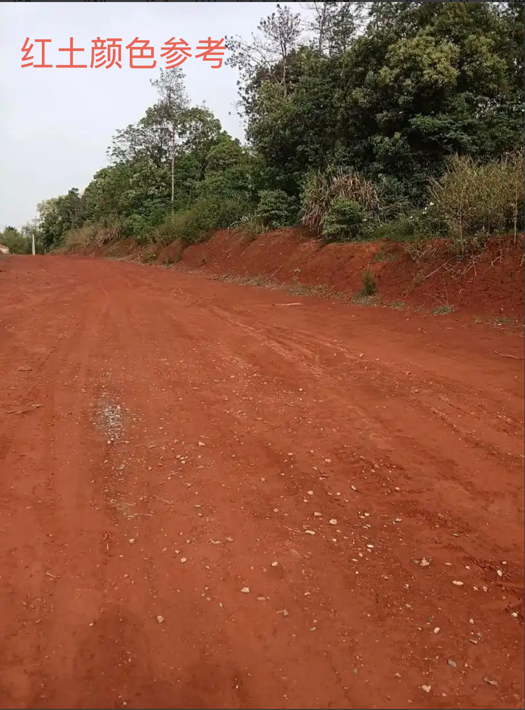
【尺寸】四方形，三层，最底下一层边长12丈，大概28米。（汉代一丈大概2.3-2.4米）
每一层95厘米，三层共2.85米。（明代一尺大概31厘米，汉代大概23-24厘米，为了台子高一点视觉上好看，按照明代的来算）
【原文：方圆二十四丈，每一层高三尺，共是九尺。】
【布置】
坛下：四边每一边6个人，共24个人（道士装束），（见道士装束参考图 图1）手持各种旗子（要有朱红色、白色、黑色这三种颜色）、兵器。（至少要有戟、矛、钺）
戟、矛可以复用之前做的卜字戟和马矟，钺和斧子类似，参考下面的图加杆，杆不要太长，一米多。
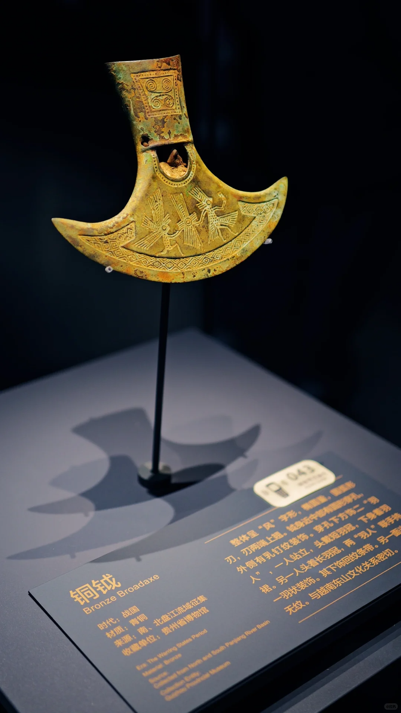
最下一层：四面分别插四色旗：东方插7面青色旗子（见青色参考图 图2），北方插7面皂色旗子（黑色），西方7面白色旗子，南方7面红色旗子。按照四象方位来排列。（见四象方位参考图 图3）
中间一层：分八方（东南西北，东北、东南、西北、西南），每一处分别插8面黄色旗子。共64面黄色旗子，旗子上绘制六十四卦，只绘卦象即可，不需要标卦的名字。（见六十四卦与八方位置参考图 图4）
旗子可以用之前的旗子改颜色纹样。杆长两米多。
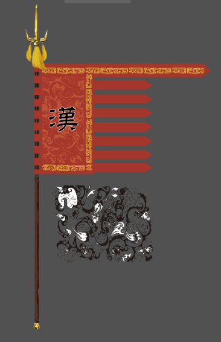
最上一层：
四个人，道士装束。
【原文：戴束发冠，穿皂罗袍，凤衣博带，朱履方裙。】
前左的人：手执长竿，竿尖上插鸡的羽毛。
前右的人：手执长竿，竿上系七星号带，带子上画北斗七星。（见北斗七星方位参考图 图5，只参考七颗星的相对方位）
这俩杆子要长一些，三米多。
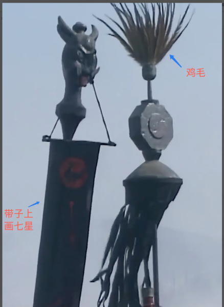
后左的人：捧宝剑。（汉剑）
后右的人：捧香炉。（小的博山炉）
七星坛最上一层需要放一个大的鼎，烧香版
道士装束参考图 图1：
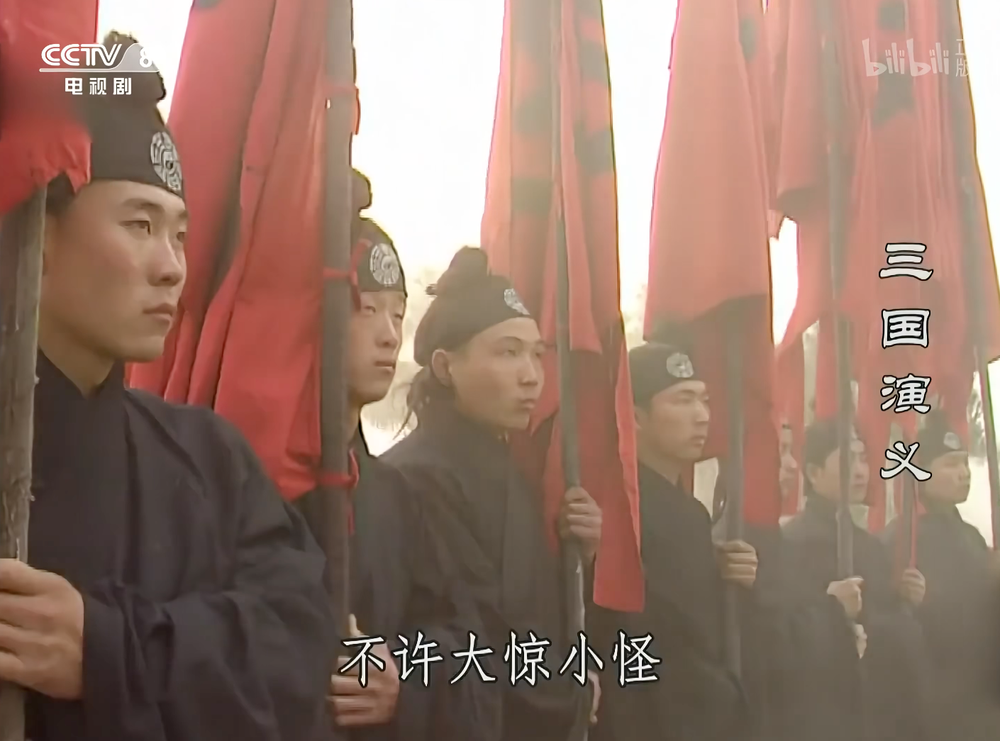
青色参考图 图2：
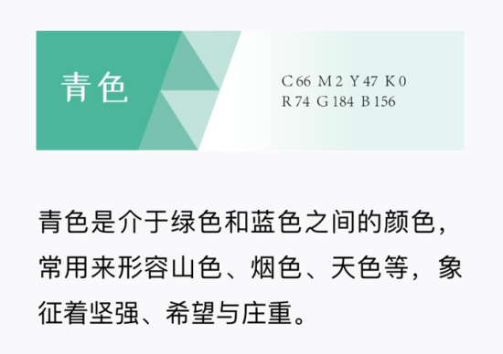
四象方位参考图 图3：
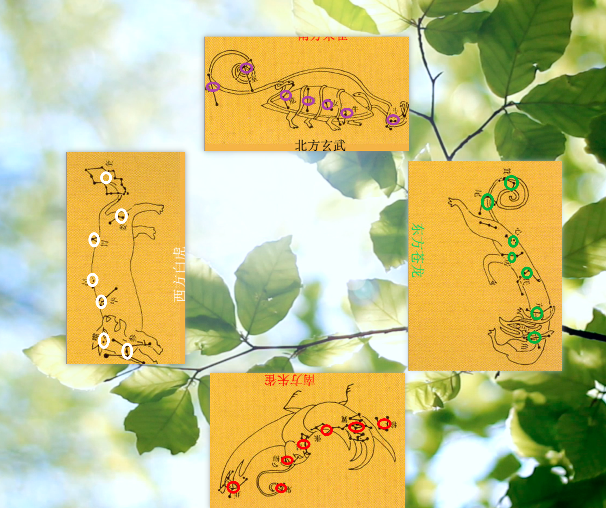
六十四卦与八方位置参考图 图4：
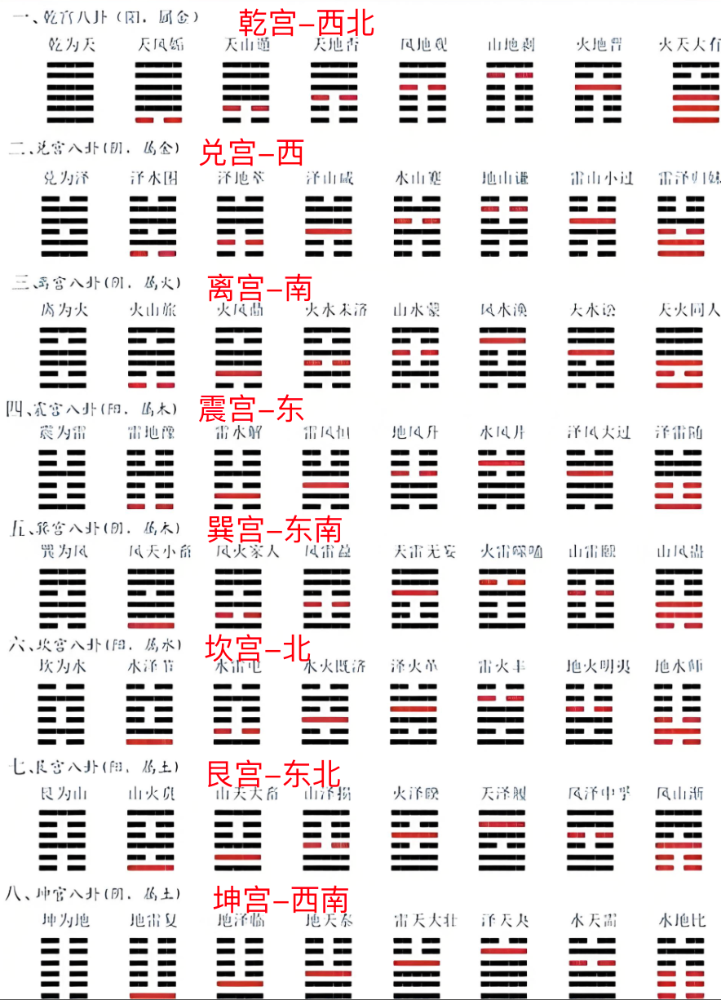
北斗七星方位参考图 图5：
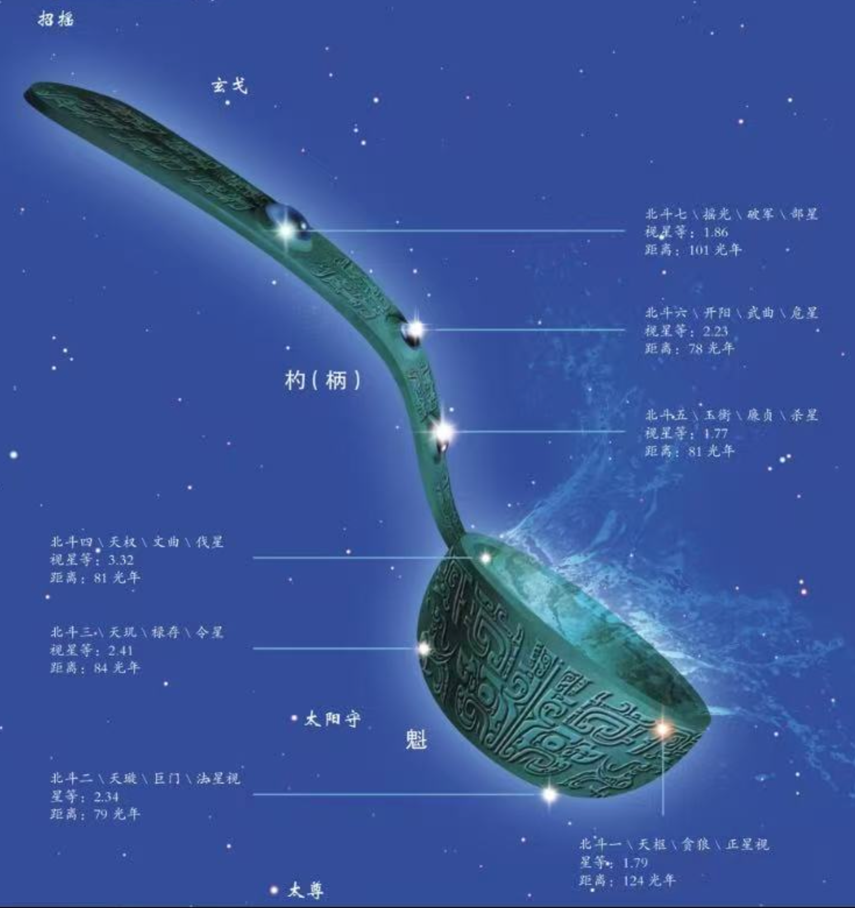
诸葛亮造型参考：
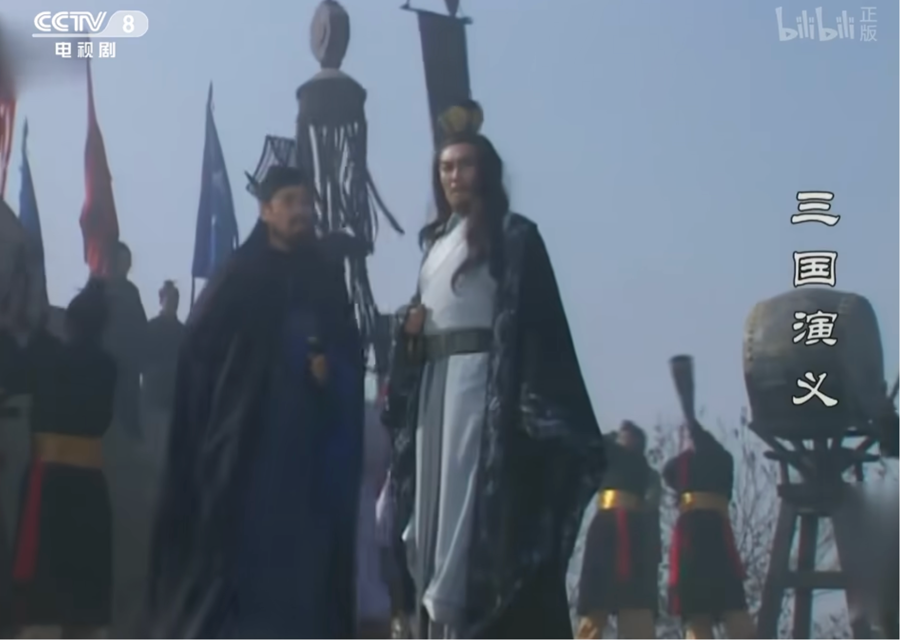
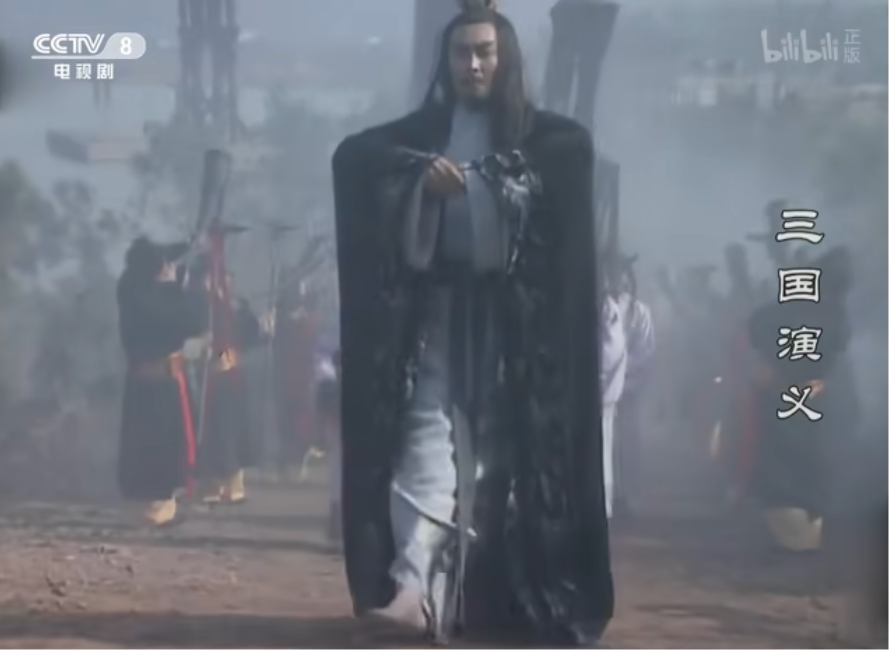
《三国演义》中对七星坛的描述：
孔明辞别出帐，与鲁肃上马，来南屏山相度地势，令军士取东南方赤土筑坛。方圆二十四丈，每一层高三尺，共是九尺。下一层插二十八宿旗：东方七面青旗，按角、亢、氐、房、心、尾、箕，布苍龙之形；北方七面皂旗，按斗、牛、女、虚、危、室、壁，作玄武之势；西方七面白旗，按奎、娄、胃、昴、毕、觜、参，踞白虎之威；南方七面红旗，按井、鬼、柳、星、张、翼、轸，成朱雀之状。第二层周围黄旗六十四面，按六十四卦，分八位而立。上一层用四人，各人戴束发冠，穿皂罗袍，凤衣博带，朱履方裙。前左立一人，手执长竿，竿尖上用鸡羽为葆，以招风信；前右立一人，手执长竿，竿上系七星号带，以表风色；后左立一人，捧宝剑；后右立一人，捧香炉。坛下二十四人，各持旌旗、宝盖、大戟、长矛、黄钺、白旄、朱旛、皂纛，环绕四面。
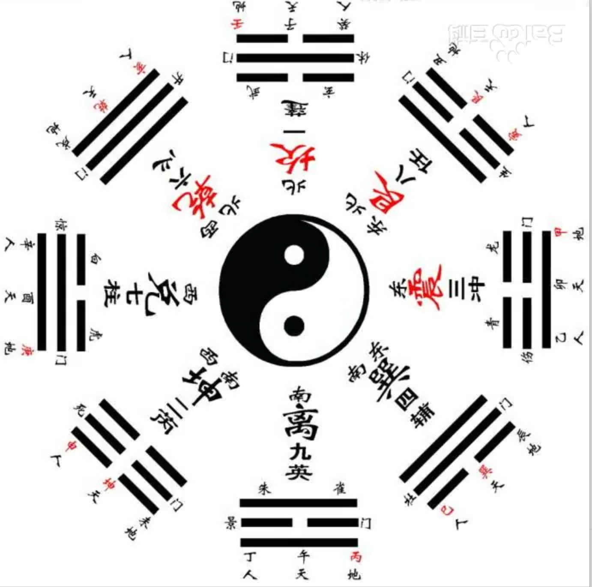